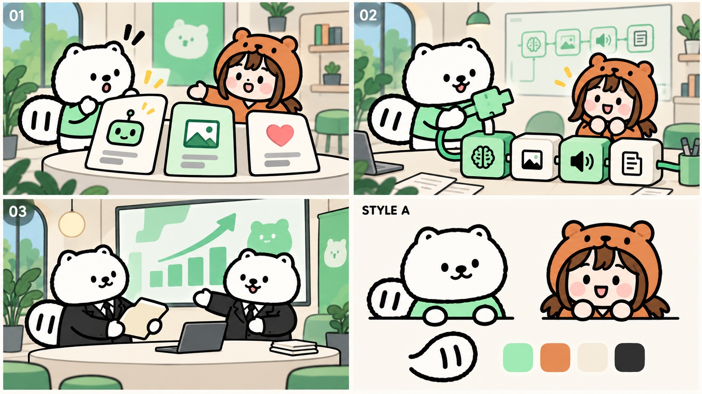
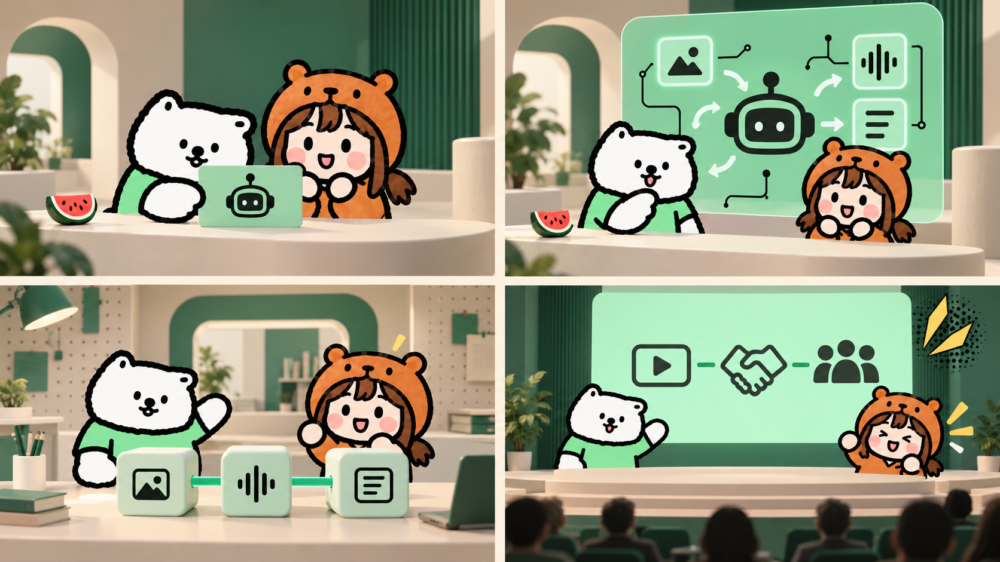
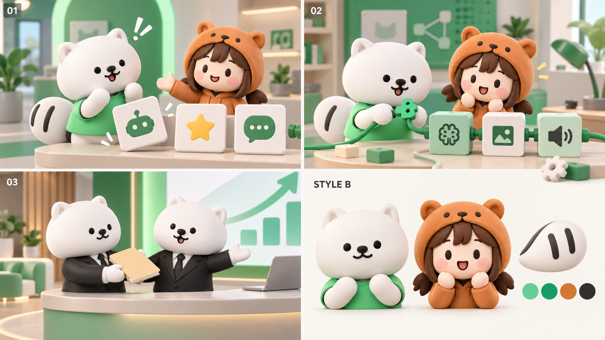
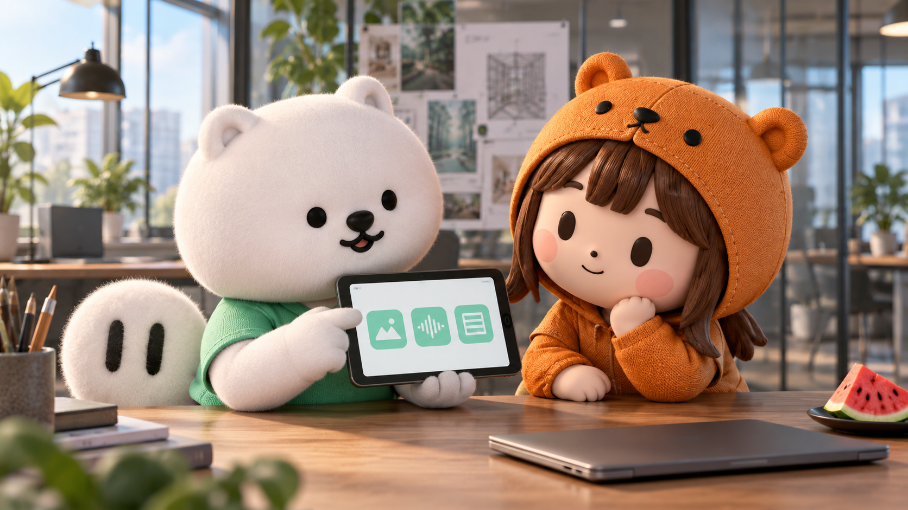
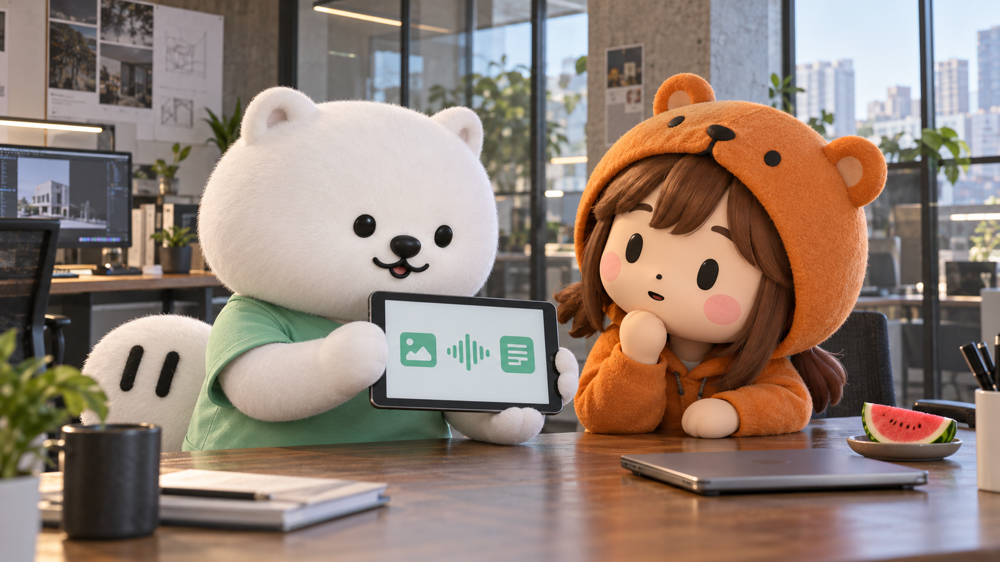
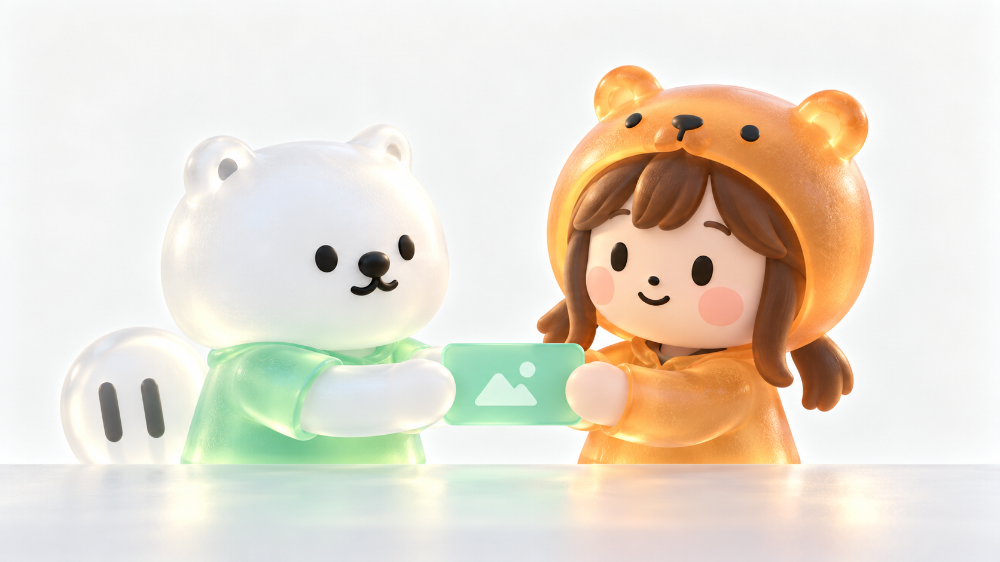
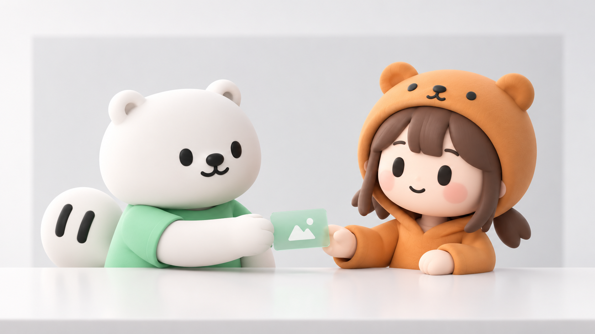

V01手绘卡通
粗线条与平涂，保留原始 IP 的手绘感。
旧 A
16 款主选，覆盖手绘、动漫、纸雕、混合效果与多种 3D。透明玻璃与亮釉瓷感暂排除；带反光道具的方向先放备查。这里直接保留此前的原图，供你重新比较，不代表已确定最终风格。

粗线条与平涂，保留原始 IP 的手绘感。
旧 A
二维角色搭配有空间感的动画背景。
旧 C
网点、色块和粗轮廓，漫画感更明确。
旧 E

简洁明暗色块，保留动画的体积感。
系列 05
立体造型结合漫画阴影与少量网点。
旧 J
绘画笔触随立体结构组织光影。
旧 K
纸片层次与投影，手工质感明确。
旧 D

角色保持二维，场景与道具提供空间。
旧 F

圆润造型、柔和灯光与较完整的场景。
旧 B

细短绒毛、衣物材质与电影式布光。
旧 G
布偶与微缩道具的实拍感。
旧 H

角色融入更接近现实的办公环境。
旧 I

背景与道具最少，注意力集中在角色。
系列 01 / 旧 M 归并

保留窗光与少量建筑结构，画面清爽。
系列 08 / 旧 O 归并

明确的几何切面，轻快且有游戏感。
系列 04

深绿背景与轮廓光突出角色，属于布光变体。
系列 06
以下内容不在主选图册中。全部原图保留，不作永久删除，也不把暂排除视作最终决定。

亮釉与大面积反射，符合本次优先排除的油亮倾向。
暂排除

角色透明与透光明显，先退出主选。
暂排除
角色可以保留，但金属、玻璃道具反光较强。
需哑光化再考虑

含半透明卡片与反射，暂不作为当前主选。
需哑光化再考虑

玻璃卡片与金属边框需进一步去反光。
需哑光化再考虑
与 V13 接近，保留原图供复查。
相近归并
与 V14 接近，保留原图供复查。
相近归并
当时未充分达到漫画风，最终对应 V05。
过程图
V01 · 手绘卡通
V02 · 二维动画场景
V03 · 印刷网点漫画
V04 · 清爽赛璐璐
V05 · 漫画电影式3D
V06 · 手绘质感3D
V07 · 纸雕舞台
V08 · 二维角色与立体布景
V09 · 圆润哑光3D
V10 · 电影感半写实3D
V11 · 实体偶质感3D
V12 · 实景感空间与CG角色
V13 · 极简哑光3D
V14 · 自然光简洁3D
V15 · 几何低多边形
V16 · 深绿布光3D
R01 · 亮釉瓷感
R02 · 磨砂玻璃
R03 · 漫画角色与科技产品场景
R04 · 极简产品广告3D
R05 · 简洁科技
D01 · 清爽哑光旧版
D02 · 自然光简洁旧版
P01 · 漫画3D首版过程图